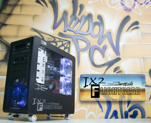

|
Last modified: 8/03/2007 Curtis L. Olson 
|
Upgrade to the ULTIMATE FlightGear PC! You can now buy an insanely high end PC with FlightGear preloaded (including the complete world scenery) and optimized for maximum performance.
You can also be sure that these platforms will be insanely great for any other demanding PC game or application. Check out WidowPC for the best service, the best performance, and uncompromising quality.
FlightGear Hardware InformationFlight Gear is a fairly typical OpenGL application in terms of it's performance and hardware requirements. It requires a reasonable hardware accelerated 3D card with OpenGL drivers to achieve smooth frame rates. Software only rendering typically yields frame rates in the neighborhood of several seconds per frame. But, with a 3d accelerated card you can expect much higher. On a 2-3Ghz class CPU with a GeForce card, frame rates in excess of 60 fps are reasonable to expect in most situations. The actual frame rate varies of course with scene complexity (which changes from area to area and changes as your view direction changes) and the specific details of your hardware
OpenGL Drivers for Win32 and MacMost modern computers these days ship with hardware accelerated 3D cards. If you are having trouble running FlightGear, visit your card manufacturer's web site and download and install the latest drivers for your card. Appendix C of The FlightGear Manual has some further information on configuring your machine to run OpenGL applications.
OpenGL Drivers for Linux, FreeBSD, etc.Nvidia and ATI cards are all pretty well supported by the PC Unixen. Depending on your video card, your distribution, and your sys-admin experience, getting accelerated drivers running can be more or less of a challenge. We have assembled some information and pointers to information for configuring your 3d card in Appendix C of The FlightGear Manual.
The Big PictureHere is a bit of general background information on OpenGL and 3D hardware acceleration contributed by Steve Baker (sbaker@link.com)Updated by Curt Olson (9/25/2000) When you are drawing graphics in 3D, there are generally a hierarchy of things to do:
On a $100k SGI workstation, you do (1) and (2) and the hardware takes care of (3) and (4) On a $100 PC 3D card, you (or your OpenGL library software - which runs on the main CPU) do (1), (2) and (3) and the hardware takes care of (4). On a machine without 3D hardware, the main CPU has to do everything. The amount of work to do each of these operations goes up by one or two orders of magnitude at each step. One eye point, perhaps a hundred objects, tens of polygons per object, hundreds of pixels per polygon. Hence, putting step (4) into hardware is vital - you could easily need to draw a million pixels for each time you read the mouse. Putting step (3) into hardware is also very nice - cards like the nVidia GeForce are now doing this. So, if you put a cheap accelerated 3D card onto a slow-ish PC, you still get all the benefits of not doing the per-pixel math in software - so your frame rate will speed up. But since that per-pixel stuff now goes very fast, you are probably limited by the speed that your old clunker can do step (3) - the per-vertex math. A card like the GeForce which can do step (3) will bring you even greater performance benefits on a slow-ish PC. It has been suggested that even a 400MHz Pentium II couldn't feed vertices to a Voodoo-2 card faster than it could process them. That was for a 'typical' scene though. If your polygons are very large (in terms of screen area) then the amount of per-pixel math will increase up to the point where even a slow PC would end up waiting for the 3D card to complete the rendering of one polygon before it can accept the next. If your polygons are very small then the 3D card may not give you much benefit. There is a certain amount of overhead in sending each polygon to the hardware from the main CPU - and that cost could ultimately be more than the cost of drawing the pixels in software if the polygons only cover a few pixels each. If your 3D card doesn't provide a speedup then make sure you have a proper OpenGL driver installed for that card - some cards only support Direct3D which FGFS is unable to interface to. Some 3D cards can't function if you set the display resolution too large or the pixel depth to something that card won't support. Some OpenGL drivers silently drop back to software-only rendering under those circumstances. In summary: Will a 3D card speed up FGFS on a standard PC? Yes - immensely. |
|
|
|
Last modified: 8/03/2007 Curtis L. Olson
|